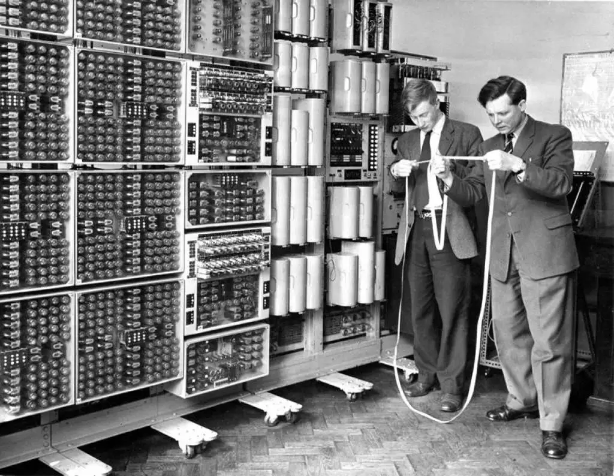
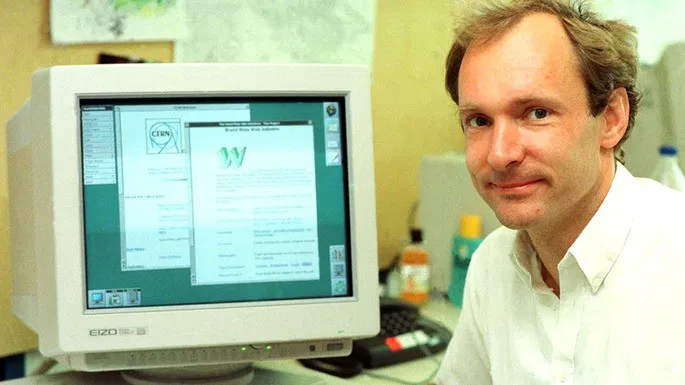

🧠 Origens e Primeiras Ideias (1950–1960)
- Durante a Guerra Fria, os Estados Unidos buscavam criar uma rede de comunicação que continuasse funcionando mesmo se parte dela fosse destruída. Surgiu então a ideia de interligar computadores para trocar informações de forma segura.
💻 Nascimento da ARPANET (1969–1970)
- Em 1969, surgiu a ARPANET, a primeira rede de computadores interligados. Ela conectava universidades e centros de pesquisa, permitindo a troca de informações entre elas. Pouco tempo depois, em 1971, foi criado o e-mail, uma das primeiras formas de comunicação digital entre pessoas.
🔌 A Internet Moderna (1980–1989)
- No início da década de 1980, a ARPANET passou a usar o protocolo TCP/IP, que padronizou a troca de dados entre redes diferentes. Esse marco, em 1983, é considerado o nascimento da Internet moderna. Em 1984, foi criado o DNS (Domain Name System), que tornou os endereços mais fáceis de lembrar, como “.com” e “.org”.
🌍 Criação da World Wide Web (1989–1993)
- Em 1989, o cientista britânico Tim Berners-Lee, no CERN, desenvolveu o conceito da World Wide Web (WWW), que permitia acessar documentos e páginas através de links. Em 1991, a Web foi aberta ao público, e em 1993 surgiu o Mosaic, o primeiro navegador gráfico, que popularizou o uso da Internet.
🚀 Expansão e Popularização (1990–2000)
- A partir da segunda metade dos anos 1990, a Internet cresceu rapidamente. Empresas como Amazon (1995) e Google (1998) surgiram e transformaram o modo de buscar e consumir informações. Nos anos 2000, apareceram as redes sociais, como o Facebook (2004), e a Internet móvel se expandiu com o lançamento do iPhone (2007).
🤖 A Internet Inteligente e Conectada (2000–Hoje)
- Já na década de 2010, a Internet passou a integrar tecnologias como inteligência artificial, computação em nuvem, Internet das Coisas (IoT) e redes 5G, tornando-se parte essencial da vida cotidiana e base para o avanço da comunicação, do trabalho e da informação no mundo.



TABELA CRONOLÓGIA
| Ano | Marco | Importância |
|---|---|---|
| 1969 | ARPANET | Primeira rede de computadores |
| 1971 | Primeira comunicação eletrônica entre pessoas | |
| 1983 | TCP/IP | Primeira comunicação eletrônica entre pessoas |
| 1983 | TCP/IP | Base técnica da Internet moderna |
| 1989 | WWW | Conceito de Web |
| 1993 | Mosaic | Primeiro navegador gráfico |
| 1998 | Busca eficiente na Web | |
| 2004 | Era das redes sociais | |
| 2007 | iPhone | Internet móvel e apps |
| 2020+ | 5G, IoT, IA | Nova fase da Internet global |